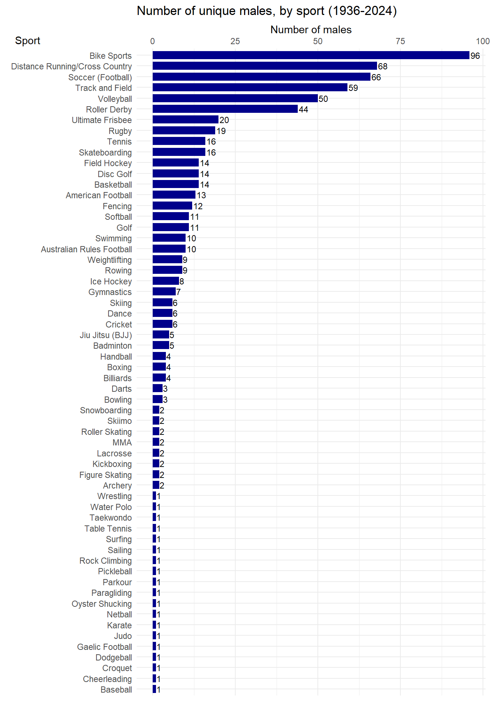
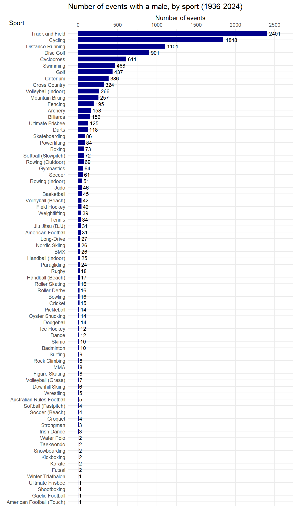

Males in Women’s Sports
The number of males competing in women’s sports has increased exponentially in recent years. This document shows the breakdown by year and by sport.
These are only the known male athletes. There are almost certainly other males competing in women’s sports who have not been reported.
Data from HeCheated.org
By year
Note: 2024 data is as of 2025-01-04 and is in light blue.
Note: 2024 data is as of 2025-01-04 and is in light blue.
Note: 2024 data is as of 2025-01-04 and is in light blue.
Note: 2024 data is as of 2025-01-04.
By sport

